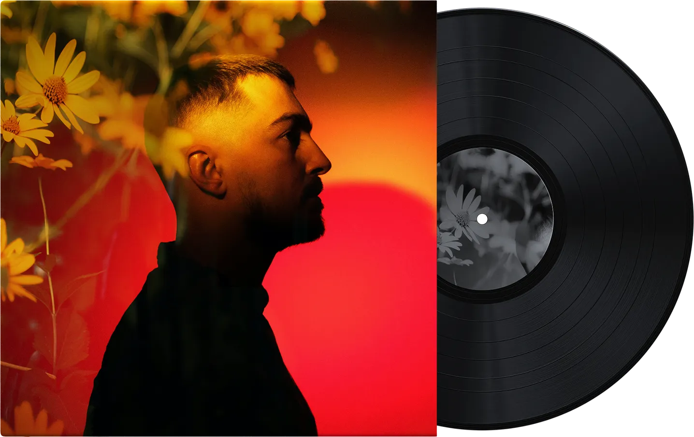
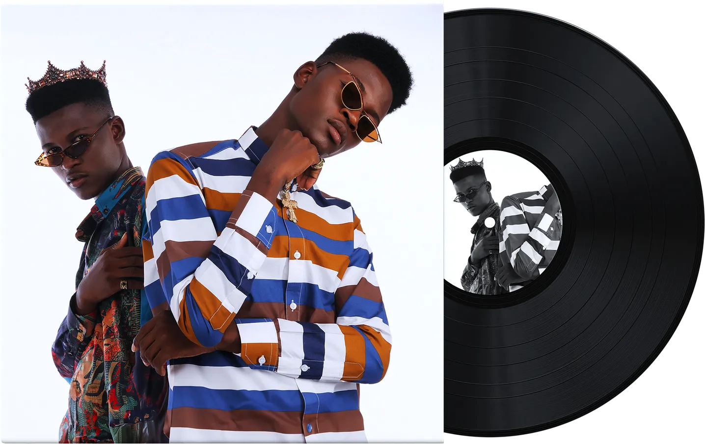
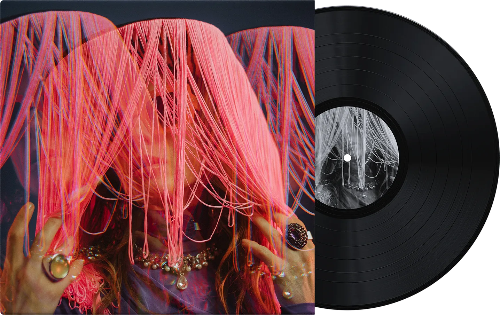

<section class="popular_music">
  <div class="popular_music__carousel">
    <button
      class="popular_music__button popular_music__button--left"
      aria-label="Previous slide"
    >
      <svg
        class="popular_music__icon"
        viewBox="0 0 30 30"
        xmlns="http://www.w3.org/2000/svg"
        aria-hidden="true"
        focusable="false"
      >
        <path
          d="M10.467 15l9.1-9.45c.577-.6.577-1.5 0-2.1-.578-.6-1.445-.6-2.023 0l-10.11 10.5c-.29.3-.434.75-.434 1.05 0 .45.144.75.433 1.05l10.111 10.5c.29.3.578.45 1.012.45.433 0 .722-.15 1.01-.45.578-.6.578-1.5 0-2.1l-9.1-9.45z"
          fill="currentColor"
          opacity="0.8"
        />
      </svg>
    </button>
    <div class="popular_music__list">
      <article class="popular_music__item">
        
        <p class="popular_music__genre">Techno</p>
        <h3 class="popular_music__title">"Golden Hour"</h3>
        <p class="popular_music__artist">David Guetta</p>
      </article>

      <article class="popular_music__item">
        
        <p class="popular_music__genre">Soul</p>
        <h3 class="popular_music__title">"Soudade"</h3>
        <p class="popular_music__artist">Jack Welsh</p>
      </article>

      <article class="popular_music__item">
        
        <p class="popular_music__genre">Jazz</p>
        <h3 class="popular_music__title">"City Lights"</h3>
        <p class="popular_music__artist">Lucy Ingoo</p>
      </article>

      <article class="popular_music__item">
        
        <p class="popular_music__genre">Rap</p>
        <h3 class="popular_music__title">"Celestial Whispers"</h3>
        <p class="popular_music__artist">TwoWrack</p>
      </article>

      <article class="popular_music__item">
        
        <p class="popular_music__genre">Dream Pop</p>
        <h3 class="popular_music__title">"Morning, Love"</h3>
        <p class="popular_music__artist">Luna Solitaire</p>
      </article>
    </div>
    <button
      class="popular_music__button popular_music__button--right"
      aria-label="Next slide"
    >
      <svg
        class="popular_music__icon"
        viewBox="0 0 30 30"
        xmlns="http://www.w3.org/2000/svg"
        aria-hidden="true"
        focusable="false"
      >
        <path
          d="M19.533 15l-9.1-9.45c-.577-.6-.577-1.5 0-2.1.578-.6 1.445-.6 2.023 0l10.11 10.5c.29.3.434.75.434 1.05 0 .45-.144.75-.433 1.05l-10.111 10.5c-.29.3-.578.45-1.012.45-.433 0-.722-.15-1.01-.45-.578-.6-.578-1.5 0-2.1l9.1-9.45z"
          fill="currentColor"
          opacity="0.8"
        />
      </svg>
    </button>
  </div>
</section>
